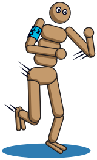
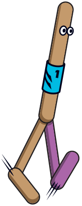
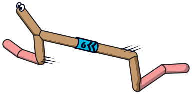
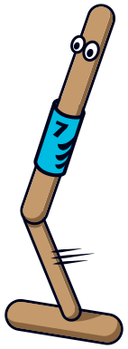
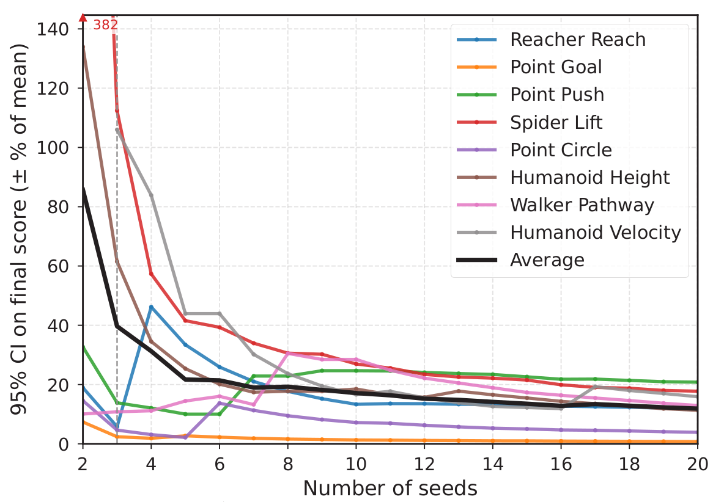
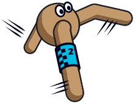

Constrained RL Accelerated with JAX
CRAX: Fast Safe Reinforcement Learning Benchmarking
Eindhoven University of Technology
- ~1Msteps per second on a single H100
- 25–180×peak throughput over Safety-Gymnasium
- 8 × 3tasks × difficulty levels, 8 agent morphologies
- 7SafeRL baselines re-implemented in JAX

Abstract
Safety is a core concern for deploying reinforcement learning (RL) agents in real-world domains such as robotics and autonomous driving. While benchmarks have been central to progress in RL, existing 3D physics-based safety benchmarks remain computationally slow, limiting large-scale experimentation and rapid prototyping. To address this gap, we propose CRAX (Constrained RL Accelerated with JAX). Built on top of the MuJoCo XLA (MJX) physics engine, CRAX leverages vectorized operations and hardware acceleration, yielding up to 200x faster training over comparable CPU-based safety benchmarks. The benchmark features eight tasks spanning three difficulty levels and multiple agent morphologies. Evaluating seven popular safe RL methods, we find that none dominates across tasks, and that learning safe policies from pixels remains largely unsolved.

Can you beat the agents?
Human vs. SafeRL
Put your own safe policy to the test. Drive the Point agent through a full episode of any navigation suite and see where you land on the leaderboard against the eight baselines from the paper. Collect reward, but watch the cost counter: the agents had to keep it under a budget of 25 per episode, and so do you.

Runs MuJoCo compiled to WebAssembly, right in your browser (~10 MB download).
- Your return
- Your cost
- /
- Safety
- Rank
| # | Policy | Return | Cost |
|---|
An episode lasts as long as in training: 1000 steps (80 s), or 2000 steps (160 s) for Push. Use
whichever camera you like; the agents never see pixels, only lidar, compass and body sensors.
The browser port runs the same MuJoCo models and task logic as
python -m crax.play,
but on CPU MuJoCo instead of MJX, so trajectories can differ slightly from the benchmark.

Environments
Eight suites, each with a reward and a separate cost signal. Goal, Push, Circle and Velocity descend from Safety-Gymnasium; Pathway, Height, Lift and Reach are new. Five constraint types cover the space: hazards velocity height contact boundary.


Agents × tasks
| 3D | 2D | Fixed base | ||||||
|---|---|---|---|---|---|---|---|---|
| Task | Point | Ant | Humanoid | Spider | HalfCheetah | Walker2d | Hopper | Reacher |
| Goal | ● | ● | ● | ● | ||||
| Circle | ● | ● | ● | ● | ||||
| Push | ● | ● | ● | ● | ||||
| Velocity | ● | ● | ● | ● | ● | ● | ● | |
| Height | ● | |||||||
| Lift | ● | |||||||
| Pathway | ● | ● | ● | |||||
| Reach | ● | |||||||
Highlighted entries are the configurations evaluated in the paper.
Three difficulty levels
Each suite ramps from a lenient setting most methods can solve to one that leaves ample room for improvement: more and more varied hazards, smaller goals, moving targets, stricter bounds or more restricted limbs.


Learning from pixels
Every task exposes an egocentric camera mounted on the agent and an allocentric camera observing it from outside. Frames are rendered on the GPU inside the same compiled loop as the simulation, so pixel observations never leave the device.


Egocentric (left of each pair) and allocentric (right) views. Policies receive them at 64×64.

Results
Two orders of magnitude faster
On identical hardware, Safety-Gymnasium saturates at 3K–20K steps per second and runs out of CPU memory past 256 environments. CRAX keeps scaling to thousands of parallel environments and peaks at roughly 1M SPS on Point Goal and Ant Velocity and 340K SPS on Humanoid Velocity: 25–180× the peak of Safety-Gymnasium.
The full evaluation suite (algorithms × environments × levels × seeds) is hundreds of runs and trillions of environment steps. CRAX completes it in 2 weeks on a single H100; the same study on Safety-Gymnasium would take close to a year.

No method dominates
Seven SafeRL baselines plus unconstrained PPO, trained for 500M steps with 10 seeds each on every Level 1 task. P3O and FOCOPS are the strongest overall; PPOLag is the only baseline that satisfies every cost bound on Levels 2 and 3, but at the price of reward. The dashed line marks the cost threshold d = 25.

| Algorithm | Level 1 | Level 2 | Level 3 | Total | ||||
|---|---|---|---|---|---|---|---|---|
| Wins ↑ | Safe% ↑ | Wins ↑ | Safe% ↑ | Wins ↑ | Safe% ↑ | Wins ↑ | Safe% ↑ | |
| PPO | 1 | 25 | 1 | 12 | 0 | 0 | 2 | 12 |
| PPOCost | 0 | 88 | 0 | 38 | 1 | 25 | 1 | 50 |
| PPOLag | 2 | 88 | 0 | 100 | 0 | 100 | 2 | 96 |
| PPOPID | 0 | 100 | 0 | 50 | 1 | 88 | 1 | 79 |
| PPOSaute | 1 | 38 | 0 | 25 | 0 | 12 | 1 | 25 |
| P3O | 2 | 62 | 3 | 75 | 3 | 75 | 8 | 71 |
| FOCOPS | 1 | 75 | 2 | 88 | 3 | 88 | 6 | 83 |
| CRPO | 1 | 75 | 2 | 62 | 0 | 38 | 3 | 58 |
Safety from pixels is open
Every method earns less reward from egocentric frames than from state vectors, and less still from allocentric frames. No method learns to push the block from allocentric pixels, and on the remaining five environments none learns a meaningful policy from pixels at all.

How many seeds are enough?
Throughput makes reliability studies cheap. Relative to the mean, the 95% confidence interval shrinks from about 90% at two seeds to 40% at three and 22% at five, after which gains are small.

Algorithms
All baselines share one fully compiled JAX training loop with hooks for custom losses and constraint handling,
so adding a method means writing its loss, not its infrastructure. Select one with --alg.
ppoPPOUnconstrained on-policy referenceppo_costPPO-CostCost folded into the reward as a penaltyppo_lagPPO-LagrangianPrimal-dual with a learned multiplierppo_pidPPO-PIDPID-controlled Lagrange multiplierppo_sautePPO-SautéSafety budget augmented into the statep3oP3OPenalized proximal policy optimizationfocopsFOCOPSFirst-order constrained optimization in policy spacecrpoCRPOAlternates reward and cost steps, no multipliersacSACUnconstrained off-policy referencesac_lagSAC-LagrangianOff-policy primal-dualsac_pidSAC-PIDOff-policy PID LagrangianGet started
Install
git clone https://github.com/TTomilin/CRAX.git
cd CRAX
pip install -e ".[train,cuda]"Train
python -m training.train_env \
--env_name safe_goal_point --difficulty 1 \
--alg ppo_lagPlay with the keyboard
pip install pygame
python -m crax.play --env_name safe_push_point --level 3Step an environment
import jax
from crax import envs
env = envs.get_environment('safe_goal_point', level=1)
reset_fn, step_fn = jax.jit(env.reset), jax.jit(env.step)
rng = jax.random.PRNGKey(0)
state = reset_fn(rng)
for _ in range(300):
rng, key = jax.random.split(rng)
action = jax.random.uniform(key, (env.action_size,),
minval=-1.0, maxval=1.0)
state = step_fn(state, action)
reward = float(state.reward)
cost = float(state.info['cost']) # safety cost per step
Citation
@article{tomilin2026crax,
title = {{CRAX}: Fast Safe Reinforcement Learning Benchmarking},
author = {Tomilin, Tristan and Boustani, Mourad and Beurskens, Mickey and
Nguyen, Khoi H. B. and Sim{\~a}o, Thiago D.},
journal = {arXiv preprint arXiv:2606.20376},
year = {2026}
}